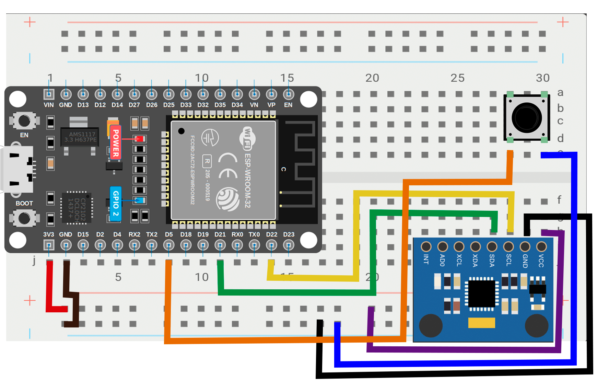

// passo 1 — ponto de partida
Blink

// código
exemplos-arduino/01-led-interno/b-aula-blink/
pinMode(2, OUTPUT)
digitalWrite(2, HIGH) · delay(1000)
digitalWrite(2, LOW) · delay(1000)
// gravar
Tools → Board → ESP32 Dev Module
Tools → Port → selecionar a porta USB
→ Upload
// passo 2 — montar o circuito
MPU6050 na protoboard

// conexões I2C
VCC → 3.3V
GND → GND
SDA → GPIO 21
SCL → GPIO 22